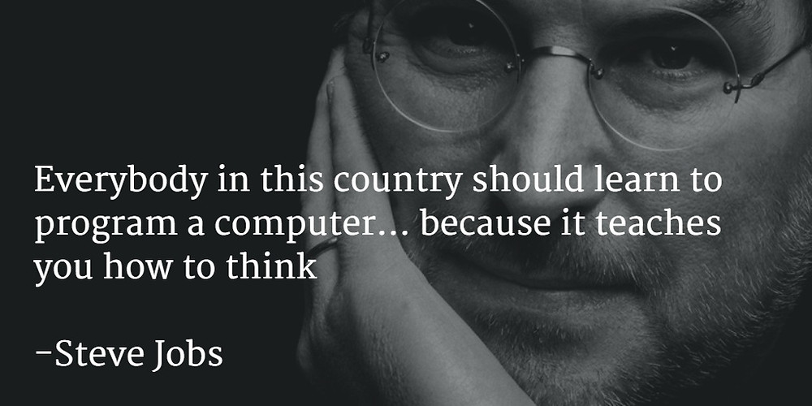

Learning Plan Reassessed
What is your long term goal and/or career pathway?
I would like to get an entry level position in the IT industry, whether it’s in development or technical support, as long as it’s a good entry level position with opportunities for progression I’ll be happy. There are many avenues you can go down in IT which I’m open to. Getting a government job where there’s a lot of experienced work colleagues would be great. I’m interested in both front-end and back-end development. I did one course in database administration which I enjoyed and heard DevOps is a good area to get into after a lot of experience. Learning everything about Cloud technologies- Azure, AWS etc. is important for career progression. It really depends on the job market. I think I’d more easily get a technical support job over a development job. I need to get a lot better at JavaScript and build some projects which could help me get hired.What do you think your biggest strengths and limitations will be in Bootcamp?
I feel like I’m reasonably easy to get along with. I enjoy collaborative learning environments. I’m worried about my lack of technical knowledge in JavaScript and need to get a lot more competent in that area. Trying to achieve deadlines under pressure will be challenging as well.What do you think your biggest non-technical challenge at Bootcamp will be?
Working well with others when there’s a tight deadline will be tough. If everyone is tired and stressed, we all need to try stay level-headed and do our best to meet deadlines. Reflecting well to feedback and implementing the changes is also a challenging aspect of the learning process. Managing myself so I don’t get overwhelmed. Not staying up too late so I’m burnt out the next day.What non-technical skills - human skills - would you like to see developed in yourself while at Dev Academy?
• Working collaboratively on group projects which will be done remotely• Collaborating in group discussions
• Solving problems in groups and meeting deadlines through teamwork
• Working under-pressure as a team
• Becoming more articulate, being able to clearly explain technical issues and talk through problems
• Becoming better at staying calm and collected under-pressure
• Sticking to deadlines
What are your expectations from the Bootcamp team?
The same expectations as the facilitation team basically & they have been amazing!• Kindness, Respect, Understanding & Professionalism
• Responsiveness
• Clear Communication
• All of This Goes Both Ways
What are your expectations of yourself on Bootcamp
• I need to get better at JavaScript in the leadup to this Bootcamp• I just want to learn as much as I can
• manage myself well because I don’t want to burnout
• Be mindful and kind to everyone
• Reflect well on feedback and try to implement it in the future
• Soak up as I can from the people in my group that have more technical knowledge
• Be kind to myself & understand that it takes time, patience and perseverance to develop these technical skills
Initial Learning Plan
A description of your own strengths and limitations in relation to learning
• If I’m really interested in something I’ll spend a lot of time on it but sometimes at the expense of other priorities• I enjoy problem solving. It’s really satisfying figuring something out, or when someone helps you and it works
• I enjoy learning and teaching collaboratively. If I’m encountering a technical problem the chances are someone else has encountered it also
• I can push through and get work done when there’s a deadline
• Sometimes have a tendency to procrastinate
• I could get better at managing my time
• Lack of programming experience. This is my first-time learning JavaScript. I’ve spent a short amount of time learning Python but it was only a beginner course.
A commitment to how you will manage your workload in this programme. This should include: An explanation of how you will manage yourself to work productively and safely with other learners, facilitators and industry/community representatives
o If I do become overwhelmed with the workload, communicate it with my facilitators and group members/if we’re working together.o Sleeping and eating well, while managing my time effectively
o Taking breaks from the screen, getting a cup of tea, having a stretch
o Acting professionally when I am under pressure
o Understanding that all the learners are experiencing stress (we are in this together)
o Being compassionate and understanding to others
o Being respectful of others’ opinions and being mindful of social etiquette when working on projects together
o Reflecting on feedback well and not taking it personally
o Making use of the three counselling sessions available
o Making time for workouts at the gym and catching up with friends & whānau
What you will do when things are building up and starting to get to you
• Having a break from the screen• Talk to someone close about the stress
• Discuss it with the facilitators
• Discuss it with my team-mates
• Ask if an extension is possible if things are particularly stressful
• Be open and honest
• Put in the mahi and don’t procrastinate
A commitment as to how and where you will seek help in a timely way
• If I’m working in a team and someone has a lot more experience than me, I might simply ask that person• I’ll first try to research the issue and solve it that way
• If I have a technical issue, I’ll post it on the Slack page first
• If it hasn’t be addressed, I’ll message a facilitator
• If it’s a more serious issue I’ll find out who the appropriate person is to contact
Scheduling Information:
• I’ll just try and fit in gym sessions in the late afternoon/evening when I can• I have no serious commitments
• I might have to water the plants in the weekend on occasion for my family’s native plant nursery which doesn’t take long
• I have a wedding I have to attend in January on a Thursday but that’s about it
